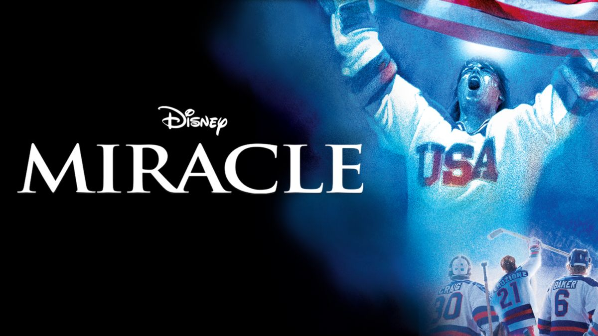

| The Story | The Cast | Trailer |
|---|
Herb Brooks, head ice hockey coach at the University of Minnesota, interviews with the United States Olympic Committee for the national team coach's job, discussing his philosophy on how to beat the Soviet team, calling for changes to the practice schedule and strategy. The USOC is skeptical, but ultimately gives Brooks the job.
Brooks meets his assistant coach Craig Patrick at the tryouts in Colorado Springs. Brooks selects a preliminary roster of 26, indifferent to the preferences of senior USOC hockey officials. He convinces USOC executive director Walter Bush that he has their best interests at heart. Bush reluctantly agrees to take the heat from the committee for Brooks' decisions.
During the initial practice, tempers flare as forward Rob McClanahan and defenseman Jack O'Callahan get into a fight based on college rivalry. Brooks bluntly tells the players that they are to let go of old rivalries and start becoming a team. He then calls for introductions and the players each tell their name, hometown and which team they play for. As practices continue, Brooks uses unorthodox methods to winnow the roster down to 20 players. The players themselves worry about being cut at any time, knowing that Brooks himself was the last player cut from the 1960 Olympic hockey team that won the gold medal, so he will do anything to win.
During an exhibition game against Norway in Oslo that ends in a 3-3 tie, Brooks notices the players are distracted and not playing up to their potential. After the game, he orders them back on the ice for a bag skate. Brooks has them skate from one end of the ice to the other several times (doing, in other words, his infamous "Herbies," as the team would call them colloquially), continuing the drill even after the rink manager cuts the power. Exhausted, forward and team captain Mike Eruzione re-introduces himself in the same matter from the initial practice and cries out that he plays for the United States. Getting the answer he wanted all along, Brooks finally tells the players they are done. Eventually, the team comes together, with the players thinking of themselves as a family representing the United States. Just before heading to Lake Placid, the Americans plays the Soviets in an exhibition game at Madison Square Garden. The Soviets manhandle the young American team, winning by a score of 10-3. During the game, O'Callahan receives an injury that could keep him out of the entire Olympics, and starting goaltender Jim Craig is told he may be benched in favor of backup Steve Janaszak. Craig ends up retaining his starting job when the coach brings him to realize that he hasn't been giving his very best.
As the 1980 Winter Olympics begins, the Americans trail Sweden 2-1 in the first game. Brooks fires up the team during an intermission by accusing an injured McClanahan of quitting. McClanahan ends up playing despite his injury, which inspires the team. Bill Baker scores a goal with less than a minute remaining in the third period for a dramatic 2-2 tie. They then follow up with a 7-3 win over heavily favored Czechoslovakia. As the Olympics continue, the team defeats Norway, Romania, and West Germany to earn a spot in the medal round. The Americans are considered overwhelming underdogs to the Soviets in the first medal round game. The game begins and the Soviets score the first goal. Then O'Callahan, having healed enough from his injury, enters the game for the first time. He makes an immediate impact by heavily checking Vladimir Krutov on a play that leads to a goal by Buzz Schneider. The Soviets score again to retake the lead. In the final seconds, Soviet goalie Vladislav Tretiak stops a long shot by Dave Christian, but Mark Johnson gets the rebound and scores with less than one second left in the period.
During the first intermission, Soviet coach Viktor Tikhonov replaces Tretiak with backup Vladimir Myshkin. In the second period the Soviets score a goal to go up 3-2. Early in the final period the Soviet team is called for a penalty, putting the Americans on the power play. Johnson scores his second goal of the game just as the penalty is about to expire. Later, Eruzione puts them ahead 4-3 with 10 minutes left. The Americans hold off the Soviets to win the game, completing one of the biggest upsets in sports history. Two days later the team would go on to defeat Finland 4-2 to win the gold medal. The movie ends with Brooks staring out over his team with pride as the entire team crowds together on the gold medal platform.
| Herb Brooks | Craig Patrick | Mike Eruzione | Rob McClanahan |
|---|---|---|---|
| Kurt | Noah | Patrick | Nathan |
| Russel | Emmerich | O'Brein Demsey | West |